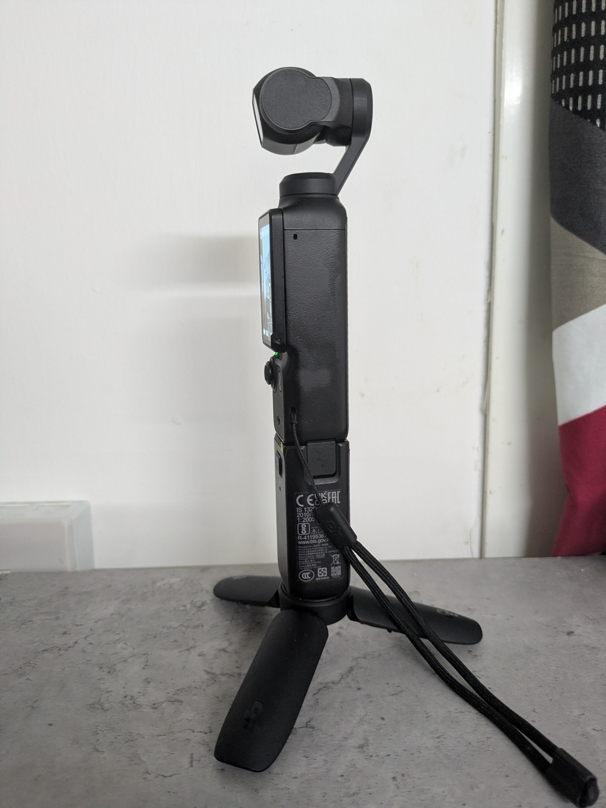

Dimensions & Build

The Pocket 3 is built to be carried anywhere without weighing you down. You can slide it into your jeans pocket, jacket, or backpack side pouch with ease.
- Weight: 179 grams (light enough to hold for hours without wrist strain).
- Dimensions: 139.7 mm long × 42.2 mm wide × 33.5 mm deep.
- Screen: 2.0-inch bright OLED touchscreen that rotates with a gentle twist of your thumb.
- Stabilizer: 3-axis motorised gimbal that physically counteracts shaky hands and walking movements.
Camera, Video & Battery Specs
Whether you are shooting family birthdays, holiday road trips, or quick clips for social media, here is how the camera performs:
- Sensor Size: 1-inch CMOS sensor (much larger than standard smartphone sensors, capturing clean light at night).
- Video Formats: Crisp 4K video up to 120 frames per second for smooth slow-motion.
- Colour Profile: 10-bit D-Log M and HLG for vibrant, natural skin tones.
- Battery Capacity: 1300 mAh rechargeable battery.
- Operating Time: Up to 166 minutes of continuous recording on a full charge.
- Fast Charging: Recharges to 80% in about 16 minutes with a standard USB-C fast charger.
Full Package Comparison & Pricing (ZAR)
| Feature / Item | Standard Package (R 11,499) | Creator Combo (R 14,899) | Vlogger Bundle (R 16,999) |
|---|---|---|---|
| DJI Pocket 3 Camera | Included | Included | Included |
| Protective Cover & Wrist Strap | Included | Included | Included |
| Standard Handle (1/4" thread) | Included | Included | Included |
| DJI Mic 2 Clip-On Wireless Mic | Not Included (Optional add-on) | Included (with windscreen) | Included (with windscreen) |
| Extra Battery Handle Grip | Not Included | Included (+60% battery life) | Included (+60% battery life) |
| Mini Foldable Tripod | Not Included | Included | Included |
| Wide-Angle Lens & Mist Filter | Not Included | Not Included | Included |
| Padded Carrying Case | Soft Bag | Dual-Zipper Travel Case | Dual-Zipper Travel Case |
Recommended Memory Cards
The camera does not have built-in internal storage for videos, so you will need a microSD card. Because 4K video writes data quickly, make sure to use a card rated U3 or V30:
- SanDisk Extreme Pro 128GB: Holds roughly 3.5 hours of standard 4K footage (~R 450).
- Kingston Canvas Go! Plus 256GB: Holds roughly 7 hours of 4K footage (~R 750).